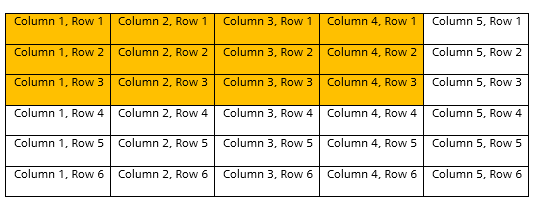

Multi Level Start
The Multi Level Start page enables you to create a parent lot with one or more child lots. The product itself may be wafer-based but the lots created are quantity-based and undergo quantity-based processing. You can identify child lots using X, Y coordinates if the product has been assigned a container dimension template.
A Container Dimension template specifies the location of product within a container and where child lots can be assigned within that location. Container Dimension includes three required fields:
| • | X-Dimension—number of columns where child lots can be assigned |
| • | Y-Dimension—number of rows where child lots can be assigned |
| • | Starting X-Y Location—starting position: Top Left, Top Right, Bottom Left, Bottom Right |
X, Y dimensions (locations) dictate the maximum number of child lots that can be created. Multiply X by Y to determine the maximum number of child lots that can be created.
Example
The highlighted cells in this table represent where child lots could be identified for a container specified with X, Y dimensions of 4, 3 and a starting location of Top Left.

Your system administrator, or designated modeler, configures some or all of the following modeling objects in support of Multi Level Start and single wafer processing:
|
Object |
Multi Level and Single Wafer Configuration |
|||||||||
|---|---|---|---|---|---|---|---|---|---|---|
|
Container Dimension |
Used to create a template containing a pair of X, Y dimensions and a starting position that can be associated to a PN product. |
|||||||||
|
PN |
Contains the Container Dimension Template field to associate a template to the product. |
|||||||||
|
Process Spec Details |
Add pop-up contains following "multi-level" fields:
|
This table defines the fields on the Multi Level Start page.
|
Field |
Definition
|
Type |
|---|---|---|
|
Lot Id |
ID of the parent lot. |
Required |
|
Employee |
Employee performing this transaction if different than the user currently logged in. |
Required |
|
Product |
Manufacturing product being produced. |
Required |
|
Start Reason |
Indicates the reason a lot is being created, for example, Engineering, Order, and Reclaim. The product’s Default Start Reason will be used if Start Reason is blank. |
Required |
|
Workflow (Inventory Area) |
Inventory workflow used to begin processing the lot. The application uses the product's Default Start Location if Inventory (Workflow Area) is left blank. Object Category and Object Type on the selected workflow must match those on the transaction (service) to ensure that the correct transaction and start location are used. |
Required |
|
Workflow Step (Inventory Location) |
Inventory step in which to start processing the lot. The application uses the product’s Default Start Location to retrieve the step if it is left blank. The step's underlying spec Object Category and Object Type must match the transaction's Spec Object Category and Spec Object Type. This is to ensure that the right service is used to start the lot in the right location. |
Required |
|
Owner |
Person or team responsible for the lot. The application uses the product’s Default Start Owner if the owner field is left blank. Typical values include Manufacturing, Engineering, and Research and Development. |
Required |
|
Vendor |
Vendor where the lot originated. The application uses the vendors attached to the product to populate the Vendor list on the Lot Start and Lot Create pages. |
Optional |
|
Factory |
Division, department, or group within an Enterprise that is separated for accounting and reporting purposes. The Factory field on the Lot Start and Lot Create pages represents the factory in which the lot is started. The Lot Start and Lot Create pages use the factory associated with the login user if Factory is left blank. |
Required |
|
Level |
Container level field. Typical values include batch, lot, and pallet. |
Optional |
|
Qty |
Quantity of die in lot. |
Optional |
|
UOM |
Unit of measure for Qty. The application uses the UOM assigned to the start spec for Lot Start and Lot Create pages unless it is blank, in which case it uses the value DIE. |
Optional |
|
Ship From Factory |
Specifies the factory from which the lot was shipped. |
Optional |
|
Ship To Process |
Specifies the ship to process assigned to the lot. Ship To Processes are configured for a Ship From Factory. |
Optional |
|
Associate Parent Container |
Original parent lot from which the child lots were created. |
Optional |
|
Associate Child Containers grid |
Grid to create child lots of the parent. |
Optional |
|
Container |
Container or lot ID. Note: This field is required if entering a child lot. |
Optional |
|
Qty |
Quantity of die in lot. Note: This field is required if entering a child lot. |
Optional |
|
X Location |
First coordinate of the X, Y pair of coordinates used to specify a location within a container or lot. Note: This field is required if creating a child lot of product that has an associated container dimension template. |
Optional |
|
Y Location |
Second coordinate of the X, Y pair of coordinates used to specify a location within a container or lot. Note: This field is required if creating a child lot of product that has an associated container dimension template. |
Optional |
|
Existing Child Containers grid |
Displays any existing children of the parent lot. Note: Only contains entries if you select an existing parent in the Lot Id field. |
Display Only |
|
Container |
Container or Lot ID. |
Display Only |
|
Qty |
Quantity of die in lot. |
Display Only |
|
Product |
Product that is being manufactured. An instance of the PN modeling object. |
Display Only |
|
X Location |
First coordinate of the X Y pair representing the column location on the parent lot where the child lot begins. |
Display Only |
|
Y Location |
Second coordinate of the X Y pair representing the row location on the parent lot where the child lot begins. |
Display Only |
|
Product |
Product of the child lot |
Display Only |
How to Start a Multi-Level Lot
Follow these steps to start a multi-level lot:
| 1. | Access the Multi Level Start page. |
| 2. | Enter an identifier for the parent container or lot in the Lot Id field. |
| 3. | Select a Product that has an associated Container Dimension template. The application populates fields with product default values. |
| 4. | Click Add new row on the Associate Child Lots grid. A row is activated in the grid. |
| 5. | Enter an ID for the new child lot in the Container Name field. |
| 6. | Enter the Qty of the child lot. |
| 7. | Is the product associated with a container dimension template? |
|
If . . . |
Then . . . |
||||||
|---|---|---|---|---|---|---|---|
|
Yes |
|
||||||
|
No |
|
| 8. | Repeat steps 4-7 for each additional child lot to be created. |
| 9. | Enter optional information according to your business requirements. Refer to the field definitions table for information on the optional fields. |
| 10. | Click Submit. The application displays a success message. |
The parent lot created with Multi Level Start is initially associated to its children. The lot must be scheduled before it can be processed. You select only the parent to schedule, prepare, and release the lot and its associated children.